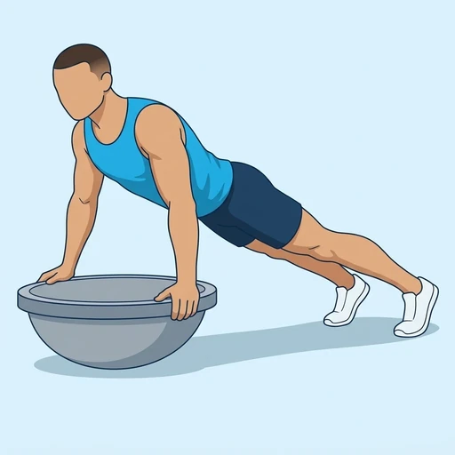
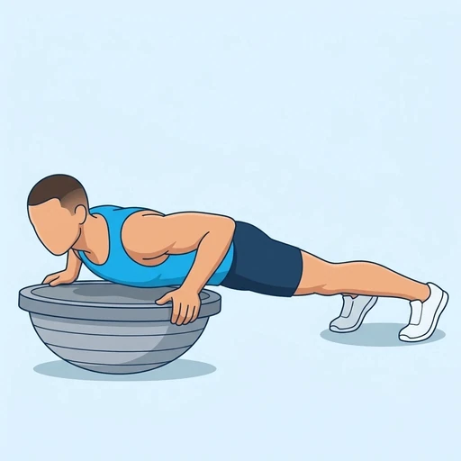

Balance Dome Push-Up
A push-up with the hands on a balance dome turned flat side up. The dome tilts under your hands, so the chest, shoulders and triceps press you up while the shoulder stabilisers and the trunk keep you steady.
Chest · Balance Dome · Intermediate


Muscles worked by the Balance Dome Push-Up
Primary
Secondary
Also called: pec, pecs, pectoralis major, pectoralis, chest muscles, tricep.
Equipment
Also called: bosu ball, bosu, balance trainer, half ball, dome trainer, half stability ball.
How to do the Balance Dome Push-Up
- Turn the balance dome over so that its flat platform faces up, and place your hands on the platform at about shoulder-width.
- Step your feet back into a high plank with your body in a straight line from head to heels.
- Brace your trunk and lower your chest toward the platform by bending your elbows.
- Lower until your chest is just above the platform, keeping your elbows about 45 degrees from your body.
- Press the platform away to straighten your arms, keeping the dome as level as you can.
- Repeat for the planned repetitions.
Form tips
- Do plain push-ups first; the dome adds instability to a movement you should already control.
- Keep your hips level and do not let the dome tilt to one side; look slightly ahead of your hands.
- Place the dome on a non-slip floor and make sure the platform is flat before you put your weight on it.
At a glance
| Body part | Chest |
|---|---|
| Category | Strength |
| Force type | Push |
| Mechanic | Compound |
| Difficulty | Intermediate |
| Equipment | Balance Dome |
| Goals | Strength, Hypertrophy |
| Tags | Push day, Calisthenics, Lower back safe, No axial load, Shoulder stability |
| MET | 6.0 (metabolic equivalent, for calorie estimates) |
| Unilateral | No |
| Bodyweight | No |
| Dataset id | balance-dome-push-up |
Balance Dome Push-Up in German & Spanish
| German | Balance-Dome Push-Up |
|---|---|
| Spanish | Push-Up sobre Domo de Equilibrio |
Descriptions, instructions and tips ship in all three languages in the JSON.
Related exercises
Exercise data (JSON)
The record below is exactly what exercises.json ships for this exercise — names, descriptions, instructions and tips in English, German and Spanish.
{
"id": "balance-dome-push-up",
"name_en": "Balance Dome Push-Up",
"name_de": "Balance-Dome Push-Up",
"name_es": "Push-Up sobre Domo de Equilibrio",
"description_en": "A push-up with the hands on a balance dome turned flat side up. The dome tilts under your hands, so the chest, shoulders and triceps press you up while the shoulder stabilisers and the trunk keep you steady.",
"description_de": "Ein Push-Up mit den Händen auf einem Balance-Dome, dessen flache Seite nach oben zeigt. Der Dome kippt unter deinen Händen, sodass Brust, Schultern und Trizeps dich nach oben drücken, während die Schulterstabilisatoren und der Rumpf dich ruhig halten.",
"description_es": "Un push-up con las manos sobre un domo de equilibrio puesto con el lado plano hacia arriba. El domo se inclina bajo tus manos, así que el pecho, los hombros y los tríceps te empujan hacia arriba mientras los estabilizadores del hombro y el tronco te mantienen firme.",
"category": "strength",
"force_type": "push",
"mechanic": "compound",
"difficulty": "intermediate",
"equipment": "bosu_ball",
"body_part": "chest",
"primary_muscles": [
"pectoralis_major",
"triceps_brachii"
],
"secondary_muscles": [
"anterior_deltoid",
"rectus_abdominis",
"serratus_anterior"
],
"goals": [
"strength",
"hypertrophy"
],
"tags": [
"push_day",
"calisthenics",
"lower_back_safe",
"no_axial_load",
"shoulder_stability"
],
"variation_group": "push-up",
"is_unilateral": false,
"is_bodyweight": false,
"instructions_en": [
"Turn the balance dome over so that its flat platform faces up, and place your hands on the platform at about shoulder-width.",
"Step your feet back into a high plank with your body in a straight line from head to heels.",
"Brace your trunk and lower your chest toward the platform by bending your elbows.",
"Lower until your chest is just above the platform, keeping your elbows about 45 degrees from your body.",
"Press the platform away to straighten your arms, keeping the dome as level as you can.",
"Repeat for the planned repetitions."
],
"instructions_de": [
"Drehe den Balance-Dome um, sodass seine flache Plattform nach oben zeigt, und lege die Hände etwa schulterbreit auf die Plattform.",
"Stelle die Füße nach hinten in einen hohen Plank, den Körper in einer geraden Linie von Kopf bis Ferse.",
"Spanne den Rumpf an und senke die Brust durch Beugen der Ellbogen zur Plattform.",
"Senke dich, bis die Brust knapp über der Plattform ist, die Ellbogen etwa 45 Grad vom Körper entfernt.",
"Drücke die Plattform weg, um die Arme zu strecken, und halte den Dome dabei so waagerecht wie möglich.",
"Wiederhole für die geplante Anzahl an Wiederholungen."
],
"instructions_es": [
"Da la vuelta al domo de equilibrio para que su plataforma plana quede hacia arriba y coloca las manos sobre la plataforma, aproximadamente al ancho de los hombros.",
"Lleva los pies hacia atrás hasta una plancha alta, con el cuerpo en línea recta desde la cabeza hasta los talones.",
"Contrae el tronco y baja el pecho hacia la plataforma flexionando los codos.",
"Baja hasta que el pecho quede justo por encima de la plataforma, con los codos a unos 45 grados del cuerpo.",
"Empuja la plataforma para estirar los brazos, manteniendo el domo lo más nivelado posible.",
"Repite el número de repeticiones previsto."
],
"tips_en": [
"Do plain push-ups first; the dome adds instability to a movement you should already control.",
"Keep your hips level and do not let the dome tilt to one side; look slightly ahead of your hands.",
"Place the dome on a non-slip floor and make sure the platform is flat before you put your weight on it."
],
"tips_de": [
"Mache zuerst normale Push-Ups; der Dome fügt einer Bewegung Instabilität hinzu, die du bereits beherrschen solltest.",
"Halte die Hüfte waagerecht und lass den Dome nicht zu einer Seite kippen; blicke leicht vor deine Hände.",
"Stelle den Dome auf einen rutschfesten Boden und achte darauf, dass die Plattform eben ist, bevor du dein Gewicht daraufgibst."
],
"tips_es": [
"Haz primero push-ups normales; el domo añade inestabilidad a un movimiento que ya deberías controlar.",
"Mantén las caderas niveladas y no dejes que el domo se incline hacia un lado; mira ligeramente por delante de tus manos.",
"Coloca el domo sobre un suelo antideslizante y comprueba que la plataforma esté plana antes de apoyar tu peso en ella."
],
"met": 6.0,
"images": {
"flat": {
"start": "images/flat/balance-dome-push-up-start.webp",
"peak": "images/flat/balance-dome-push-up-peak.webp"
}
}
}Fetch just this exercise
const { exercises } = await fetch(
"https://exercise-dataset.com/exercises.json"
).then(r => r.json());
const ex = exercises.find(e => e.id === "balance-dome-push-up");Free for personal and commercial in-app use with attribution (“Exercise data by RepDB”) — see the license and ready-made attribution snippets. Redistributing the data as a dataset or API is not permitted.